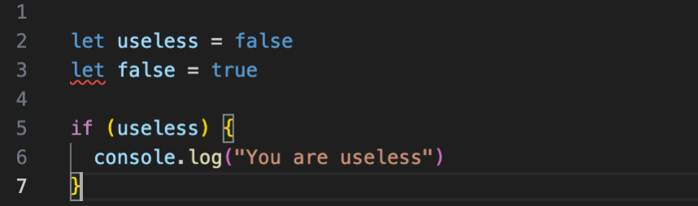
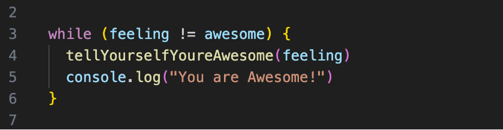

Awhile back, after spending too long in dark places, it was time to reshape my head and give back to my community. It was time to stop focusing on how I could hurt people and instead devote my time to helping others thrive. And so a charitable trust called Kaiārahi Rapuara was created.
One of the founding ideas for Kaiārahi Rapuara was that of wellbeing. "How can someone learn something else if they do not know themselves?". Te Whare Tapa Whā was initially the basis for this, however, we switched to Te Whare Mauri Ora after sitting down with Wiremu Gray and discussing the shortfalls we found with Sir Mason Durie's Te Whare Tapa Whā.
For everyones understanding we will approach this wellbeing plan using Sir Mason Durie's Te Whare Tapa Wha model for wellbeing.
| Taha | Whakamahi |
|---|---|
| Taha Tinana | Go to the gym after class in the evenings 5x a week. Focus on eating healthy. |
| Taha Whānau | Enjoy dinner with my family most nights. Spend one day in the weekend away with family. Reach out to friends far away to check in and see how they are going. |
| Taha Wairua | Seek opportunity to help others. Whilst visiting the farm to tend to the animals take time to appreciate their being. Walk barefoot. Workout |
| Taha Hinengaro | Driving with no music to allow my brain to release all its thoughts for me to process. Maintain distance to social media. |
| Whenua | Walk around barefoot. Visit our animals out on the farm daily. |
Words are powerful things. Thanks to the confirmation-bias your brain will reinforce everything it hear. Regardless of whether it is a truth or a lie your brain will find opportunities to make it true. So if someone calls you "useless" and you do not correct it then it will make this the truth.
So because we know this to be not true we need to change the syntax to our thinking.
Welcome to the confidence boost you so deserve and bring on the future.